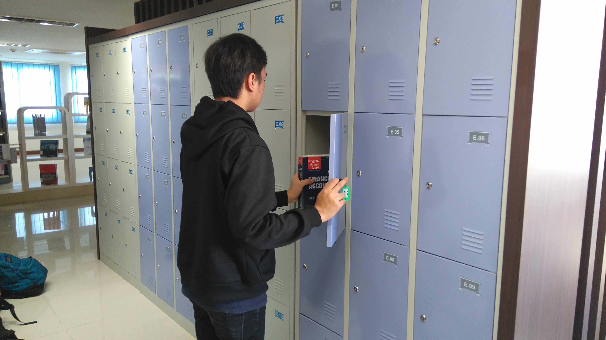

Rules of Matana University Library

Berikut peraturan-peraturan yang harus dipatuhi di perpustakaan Matana University :
- Dilarang membawa makanan maupun minuman ke dalam perpustakaan
- Tidak diperkenankan membawa tas ke dalam perpustakaan, jika keberatan bisa dititip ke loker
- Jika ingin menitip tas atau barang bawaan anda di loker, tukarkan kartu mahasiswa anda dengan kunci loker di front office
- Apabila ingin meminjam buku, isi daftar peminjam buku dahulu ke front office
- Batas peminjaman buku maksimal selama satu minggu (apabila lewat, akan dikenakan denda
- Berdiskusilah dengan suara yang pelan, tidak keras-keras